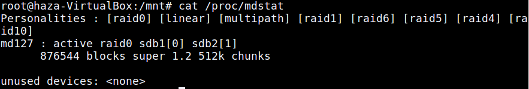
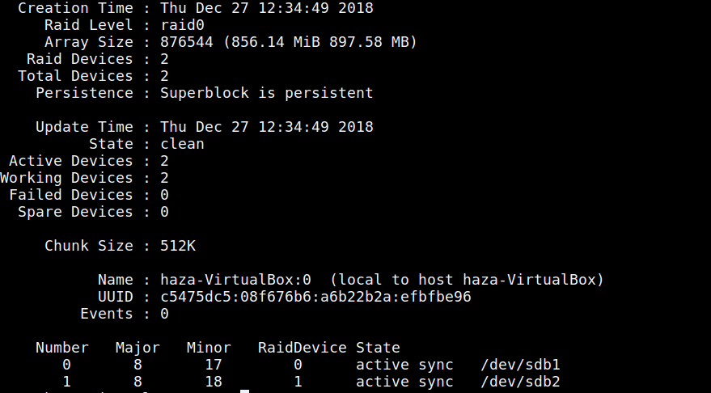

Pengertian Raid(Redundant Array of Independent Disks) :
Raid(Redundant Array of Independent Disks) adalah organisasi disk memory yang dapat mengatasi sejumlah disk dengan system akses nya parallel dan redundansi di tambah kan untuk memberikan peningkatan reliabilitas. Kerja parallel ini memberikan hasil resultan kelajuan disk yang akan lebih cepat.
Penggunaan istilah RAID pertama kali diperkenalkan oleh David A. Patterson, Garth A. Gibson dan Randy Katz dari University of California, Berkeley, Amerika Serikat pada tahun 1987. Tetapi walaupun mereka yang menggunakan istilah RAID pertama kali, tetapi hak paten RAID sejatinya dimiliki oleh Norman Ken Ouchi dari IBM, yang pada tahun 1978.
RAID memiliki sebanyak 3 karakteristik umum, dan ketiga karakteristik umum tersebut itu ialah :
Beberapa macam Raid :
Raid pada level 0 ini memakai sekumpulan disk dengan striping di level biok, tanpda adanya redundansi. Maka dari itu ia hanya menyimpan dan melakukan striping blok data di dalam sejumlah disk. Level 0 ini sesungguh nya tidak termasuk di dalam kelompok RAID, hal ini di karenakan level 0 tidak memakai redundansi dalam peningkatan kinerja nya tersebut.
RAID level 1 adalah disk mirroring, memalsukan atau menduplikat di masing masing disk. Langkah langkah ini bisa memberikan peningkatan terhadap kinerja disk, namun jumlah disk yang di perlukan juga berubah menjadi 2 kali lipat. Maka dari itu dana nya menjadi sangat lah mahal.
RAID level 2 ini adalah pengorganisasian dengan error – correcting – code (ECC). Seperti di memory server EEC yang di mana pendeteksian titik terjadinya error memakai paritas bit. Di masingn masing byte data memiliki suatu paritas yang bersesuaian yang merepresentasi kan jumlah bit pada byte data tersebut, yang dimana paritas bit = 0 apabila jumlah bit parasite = 1 atau ganjil atau parasitas bit=0 genap.
Jadi apabila salah satu dari bit di data berubah, parasitas berubah dan tidak cocok dengan parasitas bit yang sudah tersave atau tersimpan. Dengan begitu, jika terjadi suatu masalah atau kegagalan di salah satu disk, data bisa di bentuk ulang dengan mendeteksi atau reading error – correction bit di disk yang lain nya.
RAID LEVEL 3 adalah suatu pengorganisasian dengan paritas bit interleaved. Dalam pengorganisasian level ini hampir sama hal nya dengan RAID level 2, hanya saja pada RAID Level 3 ini membutuhkan suatu disk redundan, seberapa pun banyak atau jumlah dari kumpulan disk nya.
RAID Level 4 ini adalah suatu pengorganisasian dengan paritas blok interleaved, yakni memakai striping data di level blok, dengan mengesave atau menyimpan suatu paritas blok di suatu disk yang berlainan untuk masing masing blok data di disk lain yang saling bersesuaian.
RAID Level 5 ini adalah suatu pengorganisasian dengan paritas blok interleaved yang tersebar. Paritas dan juga data yang di sebar di seluruh disk termasuk pada suatu disk tambahan nya.
Untuk RAID Level 6 ini dinamai juga dengan redundansi p + q, seperti hal nya pada RAID level 5, namun menyimpan sebuah informasi redundan tambahan yang nantinya berguna untuk mengantisipasi terjadinya kegagalan dari sejumlah disk secara bersamaan.
RAID 10 biasa juga disebut dengan RAID 1+0 atau RAID 1 dan 0, mirip dengan RAID 0+1, cuma perbedaanya adalah penggunaan level RAID nya dibalik. RAID 10 sebenarnya bukan level standar RAID yang diciptakan untuk driver Linux MD. RAID 10 membutuhkan minimal 4 buah hardisk.
RAID 10 adalah kombinasi antara RAID 0 (data striping) dan RAID 1 (mirroring). Memiliki performa baca/tulis dan redundansi data tertinggi (memiliki toleransi kerusakan hingga beberapa hardisk). RAID 10 memiliki toleransi kerusakan 1 hardisk per mirror stripe.
RAID 10 biasanya banyak diimplementasikan pada database, web server dan server aplikasi atau server-server yang membutuhkan performa hardisk tinggi.
RAID 50 (atau juga disebut dengan RAID 5+0) merupakan kombinasi block-level striping dari RAID 0 dengan distribusi parity dari RAID 5. RAID 50 membutuhkan minimal 6 hardisk.
Jika salah satu hardisk dari masing-masing RAID 5 ada yang rusak, data akan tetap aman. Akan tetapi jika hardisk yang rusak tidak segera diganti, dan hardisk dari RAID 5 tersebut ada yang rusak lagi, maka semua data di RAID 50 akan rusak. Penggantian hardisk harus dilakukan agar data tetap terjaga redundansinya.
RAID 60 (atau juga disebut dengan RAID 6+0) merupakan kombinasi block-level striping dari RAID 0 dengan distribusi parity dari RAID 6. RAID 60 membutuhkan minimal 8 hardisk.
RAID 50 dan RAID 60 tidak banyak perbedaan, yang membedakan hanya pada toleransi kerusakan hardisk. Jika pada RAID 50 toleransi kerusakannya 1 hardisk per sub-array, sedang di RAID 60 adalah 2 hardisk per sub-array.
Beberapa configure Raid :
Membuat partisi :
$ sudo fdisk /dev/sdb(sesuai nama device dicomputer anda)
Command (m for help): n (Membuat partisi)
Partition number (3-128, default 3): (Nomer partisi yang kita buat.)
First sector (2050048-2415940, default 2050048): (Sector awal yang akan digunakan untuk membuat partisi)
Last sector, +sectors or +size{K,M,G,T,P} (2050048-2415940, default 2415940): (Batas akhir membuat patisi)
Jika anda bingung maka anda bisa mengetik huruf m untuk help.
Mengubah partisi menjadi Raid :
$ sudo fdisk /dev/sdb
lalu kalian bisa mengecek nomer berapa kah untuk membuat menjadi LVM dengan menggunakan "l" karena setiap OS berbeda nomernya.
18 AST SmartSleep 65 Novell Netware b8 BSDI swap fc VMware VMKCORE 1b Hidden W95 FAT3 70 DiskSecure Mult bb Boot Wizard hid fd Linux raid auto 1c Hidden W95 FAT3 75 PC/IX bc Acronis FAT32 L fe LANstep 1e Hidden W95 FAT1 80 Old Minix be Solaris boot ff BBT
Menginstall mdadm :
$ sudo apt-get install mdadm
Membuat mdadm :
$ sudo mdadm --create --verbose /dev/md0 --level=stripe --raid-devices=2 /dev/sdb1 /dev/sdb2
ikuti saja semua akan tetapi untuk memilih level kalian bebas ingin menggunakan Raid mana saja dan untuk raid-devices itu partisi mana saja yang ingin kalian gunakan.
Mengecek Raid :
$ cat /proc/mdstat
$ sudo mdadm --detail /dev/md0
Mengubah file system :
$ sudo mkfs -t ext4 /dev/md0
Memount mdadm :
$ sudo mount /dev/md0 /mnt
lalu dicek kembali dengan lsblk atau df -h
Menampilkan UUID mdadm :
$ sudo mdadm --detail --scan
Menambahkan UUID ke mdadm.conf :
$ sudo nano /etc/mdadm/mdadm.conf
Copy semua yang kalian dapat dari perintah sebelum ini lalu letakkan paling bawah dan save.
Menambahkan assemble :
$ sudo mdadm --assemble --scan
Mengupdate mdadm :
$ sudo update-rc.d mdadm defaults
Mengaktifkan Devices :
$ sudo nano /etc/default/mdadm
lalu tambahkan AUTOSTART=true pada kolom paling akhir lalu save.
Menambahkan Devices :
$ sudo mdadm /dev/md0 --add /dev/md1(nama partisi atau devices baru)
Semoga berhasil mencoba kawan.jika terjadi error atau hal lain maka bisa chat dengan admin lewat medsos dibawah.